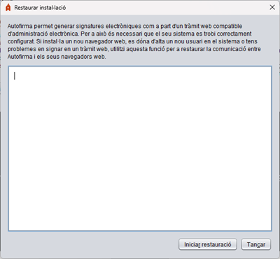

Des d'aquest panell és possible restaurar la instal·lació d'Autofirma per a corregir problemes que afectin de la comunicació entre els navegadors web i l'aplicació. Els casos més comuns són: s'ha instal·lat un nou navegador web després de la instal·lació d'Autofirma, s'han creat més usuaris en l'equip o més perfils d'usuari per a un navegador, s'ha reinicialitzat el perfil d'un usuari, etc.

En prémer el botó "Iniciar restauració" s'iniciarà el procés de restauració.
ADVERTIMENT PER A USUARIS DE MICROSOFT WINDOWS: Si en executar el procés d'instal·lació aparegués un missatge indicant "L'execució del codi no pot continuar perquè no es va trobar VCRUNTIME140.dll. Aquest problema es pot solucionar reinstal·lant el programa", haurà d'instal·lar l'entorn d'execució redistribuible de Microsoft Visual C++ 2015 i tornar a executar l'operació per a poder completar la restauració.